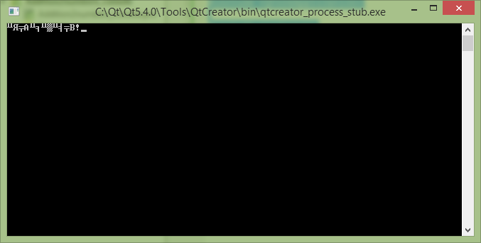
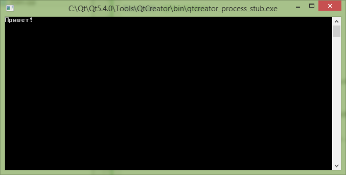

В статье рассказывается об одном костыле для отображения русских букв в консольных приложениях Qt. В статье рассматривается приложение на основе Qt 5.4.0.
В Qt версии 5 и выше поменялись некоторые настройки и стандартные костыли по отображению русских букв в консоли не работают.
Суть проблемы. В стандартной консольной программе вместо русского текста будет выведены крякозабры:
#include <QCoreApplication>
#include <iostream>
using namespace std;
int main(int argc, char *argv[])
{
QCoreApplication a(argc, argv);
cout << "Привет!";
return a.exec();
}

Решение.
Прописываем нужные кодировки:
#ifdef Q_OS_WIN32
QTextCodec::setCodecForLocale(QTextCodec::codecForName("IBM 866"));
#endif
#ifdef Q_OS_LINUX
QTextCodec::setCodecForLocale(QTextCodec::codecForName("UTF-8"));
#endif
Нужно будет еще подключить:
#include <QTextCodec>
А текст отображаем в виде костыля:
QString::fromUtf8("Текст").toLocal8Bit().data()
Программа в итоге будет выглядеть так:
#include <QCoreApplication>
#include <iostream>
#include <QTextCodec>
using namespace std;
int main(int argc, char *argv[])
{
QCoreApplication a(argc, argv);
#ifdef Q_OS_WIN32
QTextCodec::setCodecForLocale(QTextCodec::codecForName("IBM 866"));
#endif
#ifdef Q_OS_LINUX
QTextCodec::setCodecForLocale(QTextCodec::codecForName("UTF-8"));
#endif
cout << QString::fromUtf8("Привет!").toLocal8Bit().data();
return a.exec();
}

Если используйте переменные, то будет попроще:
QString S="Здравствуйте!"; cout << S.toLocal8Bit().data();
|
1 2 |